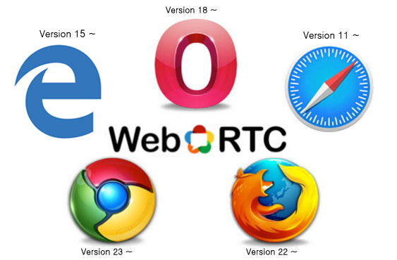

WebRTC (Web Real-Time Communication)는 웹 브라우저 간에
플러그인 도움 없이 상호 통신할 수 있도록 설계된 JavaScript API이다.
WebRTC는 구글이 오픈소스화한 프로젝트에서 기원하였으며, 그 뒤로 국제 인터넷 표준화 기구(IETF)가 프로토콜 표준화 작업을,
W3C가 API 정의를 진행하였으며, 음성 통화, 영상 통화, P2P 파일 공유 등으로 활용 될 수 있다.
WebRTC의 짧은 역사.
WebRTC 지원 브라우저

왜 WebRTC에 주목해야 하는가
No PlugIn, No Install, Bye NPAPI, Any OS→ Simple Connection!
WebRTC 주요 API
GetUserMedia 사용자의 카메라와 마이크 접근을 담당.
RTCPeerConnection Peer간의 연결을 생성하고, 오디오와 비디오 통신에 사용. (생성시 STUN 서버 요청)
RTCDataChannel Peer간의 Data를 주고 받을 수 있는 Tunnel API (WebSocket과 유사하지만, P2P라 속도가 보다 빠름)
P2P기반 NAT 및 방화벽 통과 기법
STUN (Session Traversal Utilities for NAT) 서버
사내망 환경에 NAT를 통해 공인IP, Port를 알아내는 역활을 함
TURN (Traversal Using Relays around NAT) 서버
P2P 연결이 안되는 환경일때 트래픽을 중계하는데 사용함
ICE (Interactive Connectivity Establishment)
P2P 간 다이렉트로 통신을 위해 STUN, TURN 등의 기술을 종합 활용하여 라우팅 경로를 찾아내는 기술로
UDP hole punching (P2P간 공인IP가 아니더라도 최대한 연결 가능하도록 하는 기법)을 지원.